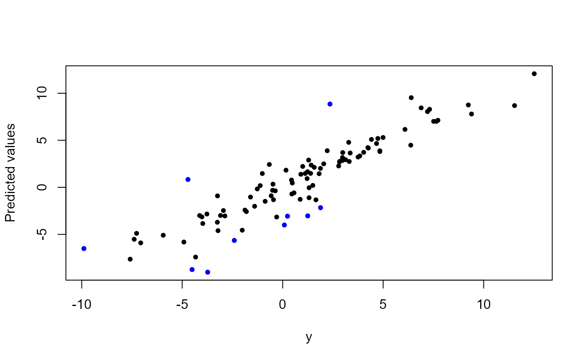

L2E_sparse_ncv.RdL2E_sparse_ncv computes the solution path of robust sparse regression under the L2 criterion. Available penalties include lasso, MCP and SCAD.
L2E_sparse_ncv(
y,
X,
b,
tau,
lambdaSeq,
penalty = "MCP",
max_iter = 100,
tol = 1e-04,
Show.Time = TRUE,
refit = FALSE
)Response vector
Design matrix
Initial vector of regression coefficients, can be omitted
Initial precision estimate, can be omitted
A decreasing sequence of values for the tuning parameter lambda, can be omitted
Available penalties include lasso, MCP and SCAD.
Maximum number of iterations
Relative tolerance
Report the computing time
Logical; whether to refit the model on the active set.
Returns a list object containing the estimates for beta (matrix) and tau (vector) for each value of the tuning parameter lambda, the run time (vector) for each lambda, and the sequence of lambda used in the regression (vector)
set.seed(12345)
n <- 100
tau <- 1
f <- matrix(c(rep(2,5), rep(0,45)), ncol = 1)
X <- X0 <- matrix(rnorm(n*50), nrow = n)
y <- y0 <- X0 %*% f + (1/tau)*rnorm(n)
## Clean Data
lambda <- 10^(-1)
sol <- L2E_sparse_ncv(y=y, X=X, lambdaSeq=lambda, penalty="SCAD")
#> user system elapsed
#> 0.00 0.02 0.01
r <- y - X %*% sol$Beta
ix <- which(abs(r) > 3/sol$Tau)
l2e_fit <- X %*% sol$Beta
plot(y, l2e_fit, ylab='Predicted values', pch=16, cex=0.8)
points(y[ix], l2e_fit[ix], pch=16, col='blue', cex=0.8)
## Contaminated Data
i <- 1:5
y[i] <- 2 + y0[i]
X[i,] <- 2 + X0[i,]
sol <- L2E_sparse_ncv(y=y, X=X, lambdaSeq=lambda, penalty="SCAD")
#> user system elapsed
#> 0.02 0.00 0.02
r <- y - X %*% sol$Beta
ix <- which(abs(r) > 3/sol$Tau)
l2e_fit <- X %*% sol$Beta
plot(y, l2e_fit, ylab='Predicted values', pch=16, cex=0.8)
points(y[ix], l2e_fit[ix], pch=16, col='blue', cex=0.8)
